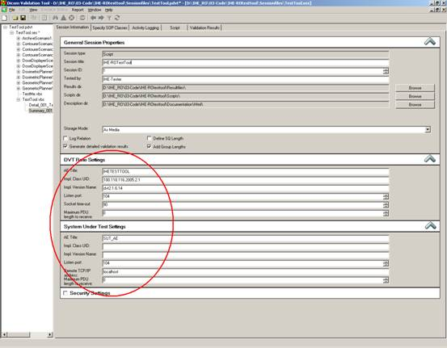

Instruction for use test scenarios
This
document describes how to run test scenarios using the DVTk
based IHE-RO MMRO II TestTool.
Start the
IHE-RO test tool by clicking the “TestTool - MMRO-II.pdvt”
shortcut.
Configuration
First the testtool needs to be configured, starting with the
connection details. The actor under test network settings need to be
configured.
Select the
‘Session Information’ tab and configure the actor under test AE title, ip-address and port number.
Make sure
that the IHE test tool AE title and port is correctly configured at the actor
side as well.

Running a scenario
The test scenario will start running by double
clicking on the test scenario name in the left pane (e.g. double click on the
text “RegistratorScenario1.vbs” in the left pane)
Most scenarios display a selection window with a
number of options as shown in the figure below. Each option corresponds to a
scenario variant; each variant only differs in the dataset used to run it.
The scenario variant that is chosen affects the
dataset that is sent and depending on the scenario variant affects the number
of objects that should be sent back to the test tools. The specified rules in a
scenario are not affected in any cases and will remain the same for each
scenario variant.
For the examples below registrator scenario 1 is used.
In this scenario CT is sent as base and depending on the scenario variant the
actor under test should register PET and or MR on CT.
The actor will generate one or more spatial
registration objects.
- One
if PET is registered on CT.
- One
if MR is registered on CT.
Example 1: (The dialog
box used with registrator scenario 1 has six different scenario variants)
Variant 1 is selected (CT as Base, register PET) This
variant will require the actor under test to create 1 spatial registraton
object and therefore 1 object is expected back by the IHE RO test tools.
- The
CT and PET set of the reference data set will be sent to the actor under
test.
- The
actor under test will create a spatial registration object and send this
back to the test tool.
Example 2: (The
dialog box used with registrator scenario 1 has six different scenario
variants)
Variant 4 is selected (CT as base, register PET, then
register MR) This variant will require the actor under test to create 2 spatial
registration objects and therefore 2 objects are expected to be sent back by
the IHE RO test tools.
- The
CT, PET and MR sets will sent to the actor under test.
- The
actor under test will register Pet on CT and MR on CT. During these two
actions, two spatial registrations will be created and are expected to be
sent back to the test tools.

After selecting the scenario variant it is possible to
skip the send step. When selecting the ‘Skip sending dataset’ option, the
dataset will not be send to the actor under test.
The test tools will proceed to the receive and
validate step.
Note: The skip sending the dataset options is only
available in the scenario’s described below:
- Registered
Contourer scenario 1
- Registered
Contourer scenario 2
- Registrator
scenario 1
When a scenario variant starts sending a pop up window
will appear showing the activity logging. See example below.

Test scenarios send transactions to the actor under
test and expect to receive transactions from the actor under test.
A test scenario will first send all transactions belonging
to the scenario or if the ‘Skip sending dataset’ option is used this step is
skipped.
After sending it will wait for incoming transactions
form the actor under test. While the test tool is listening a dialog will be
shown as can be seen below.

When all transactions have been sent to the test tool
the user can continue on with the validation of all received transactions by
closing the dialog.
The dialog can be closed by clicking the ‘Stop
listening and start validation’ button. All received scenario transactions are
validated against the IHE-RO objects profile requirements.
The results will be shown in the test tools main
window.
Test Results
The result
files of all tested scenarios are located at “<Instalation
dir>\TestTool MMRO-II\ResultFiles”.